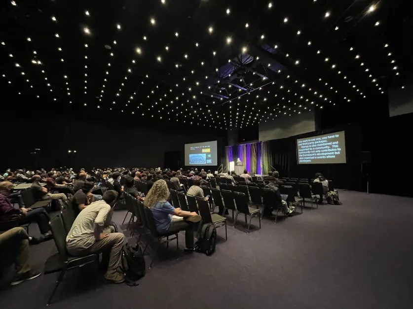

Speaking at PyCon & My First Time in the US
I always wanted to visit the US. When I got accepted to PyCon US and PyCon Italia, I decided to spend a week in New York, then fly to Pittsburgh for PyCon, and afterward head to Florence via Rome for PyCon Italia. This blog covers the first part of my adventure: New York and Pittsburgh.
First Stop: New York
New York is the coolest city I’ve ever visited! It felt so European – it’s perfectly walkable, the public transportation is great, it’s clean, there are lots of trees around, and Central Park is a huge forest with enormous skyscrapers in the background. The city is so diverse that walking down the streets made me feel at home.

Skyline
The New York skyline is one of the most famous in the world, and once you see it from a distance, you’ll understand why!
At the Empire State Building:
View from Brooklyn on Manhattan (left) and view from my Manhattan hotel room on Brooklyn (right):
Time Square
The shiniest place I’ve ever seen. It felt super cool to be in the middle of all the buzz!
Broadway
I went to Broadway to watch “The Book of Mormon.” I had never seen it before, so I had no idea what it was about. I don’t usually like theater, as I’m more of a visual and movie person, but that experience was visually stunning and the actors were singing so well that I enjoyed it a lot! The storyline was funny as well!
Live Jazz in Harlem
I love jazz, and I couldn’t miss the chance to visit one of its historic hubs! Situated in Upper Manhattan, Harlem is a neighborhood with lots of cozy bars offering live jazz every night and fancy cocktails. I spent a few hours there, listening to great music and sipping cocktails.
Food
New York City is a haven for delicious and affordable food, especially if you’re a vegetarian. While I’m not usually a fan of burgers, I was pleasantly surprised by the wide range of vegetarian options available everywhere. Bagels are another highlight – they’re like tasty sandwiches with endless possibilities, and you can find them on nearly every street corner.
As a lover of Mexican cuisine, I was thrilled to discover authentic Mexican restaurants all around the city.
Have you ever wondered how to recognize good-quality food? For me, it’s when the taste of all the ingredients is present yet subtle. That’s exactly how the sushi felt – a perfect blend of flavors, nothing overpowering, just as it should be.
PyCon
This was my first time at PyCon US, the biggest Python conference on the planet, held this year in Pittsburgh. While Pittsburgh is small with not much happening, the PyCon venue was huge.
Most events are related to sprints, special summits, or open spaces where you can discuss anything (there was even a juggling workshop!). There were also many interesting talks! My favorites were about removing the GIL and sub-interpreters in Python 3.13. I’ll share my notes in a future blog post.
I participated in a JetBrains data science quiz and won a one-year PyCharm Professional subscription! Funny enough, I’m not a data scientist, but I still remember a lot from university.
One of the most impactful experiences was the PyLadies lunch. After eating, everyone who wanted to went on stage to share a personal achievement. The idea was for us, as women, to proudly share our achievements and empower each other. It was wholesome, with people sharing personal stories like being cancer-free, being inspired by other women, or big accomplishments like obtaining a degree or a promotion. I felt very touched for hours after the session.
Part of the conference included interviews with speakers, organized by JetBrains, where they asked me about the hottest trends in the Python ecosystem in 2024. I have no idea how I looked on camera, and I don’t even remember what I said, but I can’t wait for it to be released!
Fun fact: I attended a talk where Guido was sitting right in front of me and a CPython core developer was next to me. One of the biggest benefits of PyCon US is talking to people. I spoke with Carol Willing, a CPython core developer, and it was empowering to hear her say that even its creators don’t know everything. She described it as learning to break things into smaller, manageable chunks, moving forward, and unblocking yourself when stuck. Carol was very kind, welcoming, and inspiring, and I can’t wait to listen to her keynote at the next EuroPython!
My Talk
I’m happy with how my talk went. There were some technical issues with my presentation, but no one noticed. The room was big, with a lot of echo, so I could hear my voice from all sides. The lights were very strong, and I couldn’t see the audience. It was my first time presenting in such conditions, so I spoke slowly and carefully enunciated each word. It was a new experience for me, and even though I prefer more interaction with the audience and smaller rooms, I enjoyed it a lot!
Presenting in front of a huge audience and sharing my personal experience with Python frameworks was very empowering.
There were three questions during the Q&A session, and after the talk, many people approached me to say they liked it and to share their experiences with Python frameworks. I even met someone else using FastAPI & Django ORM, the first person I’ve ever met who uses this combo!
Overall, it went well, and I’m super happy I got to talk to so many people!

Thank You, Organizers!
PyCon US is a community conference organized by the community, for the community. As a fellow community organizer, I want to thank the organizers for the time and effort they put into making this event happen!
Travel Tips And Things I Wish Someone Told Me Before
- Evenings in New York are cold! Take a warm jacket.
- Some rooms at the venue in Pittsburgh were very cold as well. Bring layers to stay comfortable.
- Finding healthy veggies: Go to Whole Foods in big cities or Giant Eagle in Pittsburgh. Keep in mind that healthy food in the US is quite expensive.
- Airports in big cities are huge. It can take an hour to get from one part to another. You might also get stuck in traffic on your way to the airport. Be there 3 hours before your flight.
- Immigration queues can be long. Once you arrive, you might wait for hours for the immigration office to process your request.
- Get involved at PyCon US: I recommend volunteering or organizing something (even an open space informal discussion), as the conference felt pretty busy with people focused on their work.
TL;DR:
- Attend the conference if you can! If you can’t, check the PSF grants. It’s a great opportunity to learn about Python from its developers.
- Speaking at PyCon US is a unique experience, as most smaller PyCons don’t host as many people in regular rooms (unless it’s a keynote).
- PyLadies lunch was very wholesome. If you’re a woman or non-binary, I totally recommend attending it!
- New York is super cool!